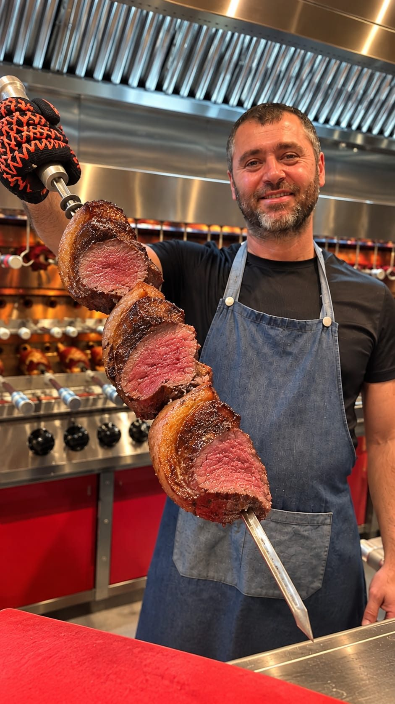

בשר טרי באילת- ככה בוחרים מסעדה ברזילאית

לצערנו רבות דובר על מטבחים של בתי מלון ומסעדות, שלא תמיד מוכרים לנו את מה שאנחנו מקווים לקבל, ושהם מניחים לנו בצלחת משהו שהם בעצמם לא היו אוכלים. לכן אם למשל אתם מגיעים לאילת ורוצים לאכול בשר טרי באילת, לכו על מסעדה ברזילאית מצוינת שהבשר שלה ידוע כטרי ואיכותי מאוד.
בעל מסעדה ברזילאית בוודאי יודע יותר מרבים מאתנו, הם רוכשים בשר טרי, מה אומר עליו הצבע? איזה חלקים מתאימים לבישול ואיזה לצלייה? איזה בשר צריך לכל מנה ואת כל סודות הקצבים שיודעים הכול על חלקי הבשר וגם איך לבחור אותו. בכתבה זו מנדב טיפים לבחירת בשר טרי אחד מבעלי מסעדת בשרים אילת אשר ידוע מאוד בטעמים שלה.
כאשר אנו רואים תוכניות בישול, משום מה נראה לנו שהשף שמבשל בתוכנית יודע הכול על בשר, אבל גם אם נסתכל על הצבע של הבשר, או על המרקם שלו, איך נוכל לדעת בעצמנו איך לרכוש בשר טרי, או אם נלך למסעדה ונזמין מנת בשר, איך נוכל לדעת שהגישו לנו בשר טרי ואיכותי.
מה משפיע על טעם הבשר?
רוב האנשים שצריכים לקנות בשר טרי, לא יודעים יותר מדי. הם מגיעים לקצב, מביטים על נתחי הבשר ומבקשים ממנו שיפרוס להם משקל מסוים של בשר. מומחה של בשר טרי אילת, מסביר כי מה שקובע את איכותו וטעמו של הבשר, זה לא רק הצבע ולא רק המרקם שלו אלא כל מיני דברים שרק הקצב יודע כי הוא יודע ממי הוא קונה את הבשר ואלה הם פרמטרים כמו גיל הבשר, מהו הזן, מה היו שיטות הגידול של הבהמה ומה היא אכלה. כל אלה משפיעים על איכותו וטעמו של הבשר. בהמשך גם אופן השחיטה משפיע על הטעם. הקירור, היישון והפירוק של חלקי הבשר. כל אלה משפיעים על נתח הבשר שאתם בסופו של דבר תאכלו. מומחה של בשר בעל מסעדה ברזילאית באילת, יודע לבחור את נתחי הבשר המתאימים למנות שהוא מגיש במסעדה והוא עושה את זה בקפדנות רבה.
אם למשל תיכנסו לקצב ותבקשו ממנו נתח של שייטל, בלי להתייחס לכל הפרמטרים שהזכרנו למעלה, זה כמו לבקש מיינן יין כלשהו בלי להתייחס לכרם, ליקב, ליישון, שנת הבציר ועוד. ממש כמו ביקבים גם הבשר הוא תוצאה של גידול חקלאי ויש הבדל ושוני בין המגדלים וההבדלים ביניהם הם אלה שמשפיעים על טעמו ומרקמו של הבשר.
בשר טרי במסעדה ברזילאית
בשר וברזיל הולכים ביחד כמו חוטיני, בוסה נובה, ריו דה ז'נרו וכדורגל. מי שיש לו מסעדה ברזילאית באילת, יודע לבחור בשר טרי אילת למסעדה שלו למנות כמו צ'ורוסקוריה, שיפוד עצום ועליו נתחי בשר, אשר מוגשים לסועד ישר מן השיפוד לצלחת. ויש גם צ'ורוסקוריה פרימיום, ו-14 סוגי בשר כמו פילה בקר, צלעות טלה, חזה מולארד ועוד
חשוב לומר כי הבקר הכי איכותי שנבחר למסעדה הזו, הוא דווקא מבקר שגדל בארץ. לכן בשר טרי אילת יש לדעת במסעדה ברזילאי, המנות לא נעשות מבשר מיובא אלא מבשר מקומי. כל קצב גם יודע להתאים את הבשר למנה שרוצים לעשות ממנו ולכן אם אתם מגיעים לקצביה של מומחה, הוא יוכל לעזור לכם לבחור את נתח הבקר הנכון שאתם צריכים למנה המסוימת שלכם.
אין ספק כי הדיאלוג אצל הקצב יעיד על הידע שלו ויעזור לכם לבחור את נתחי הבשר הכי טובים למנות הברזילאיות שלכם או שכך תוכלו להבין בנתחי הבשר האיכותיים של מסעדה טובה באילת.